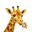
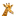
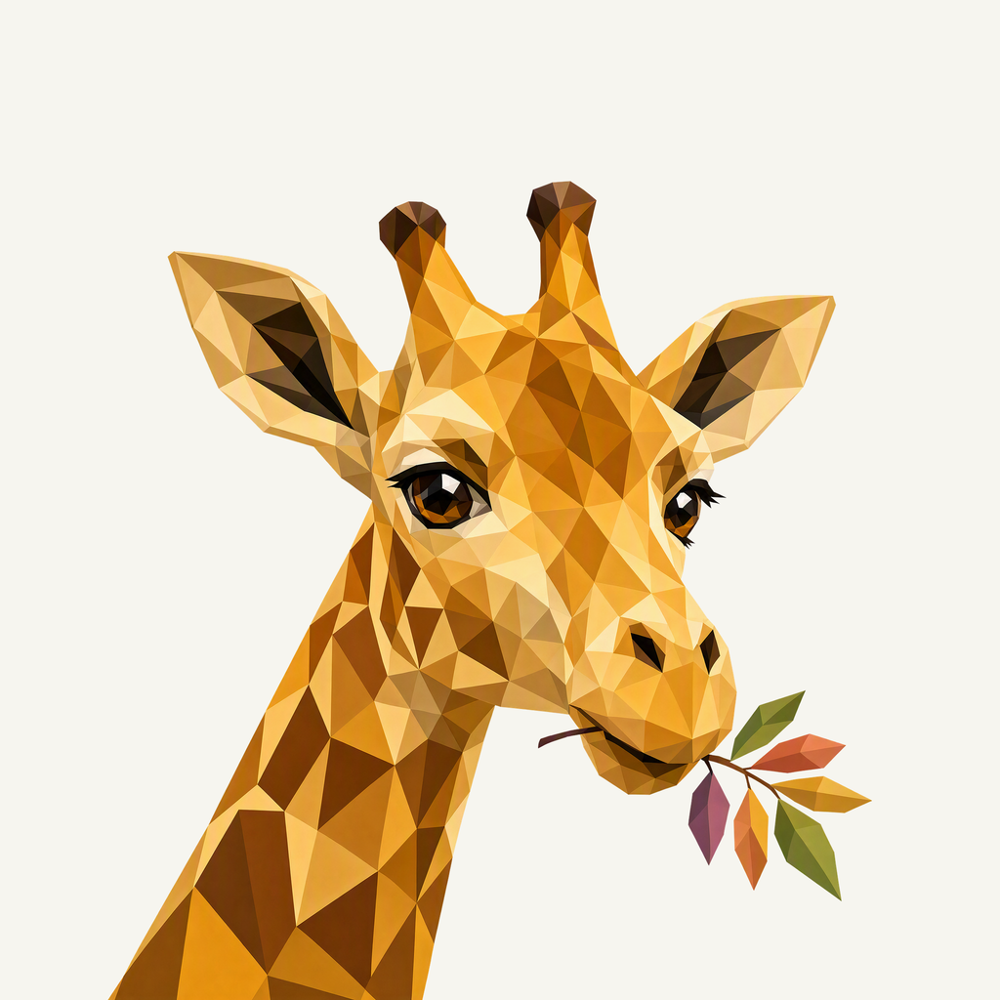
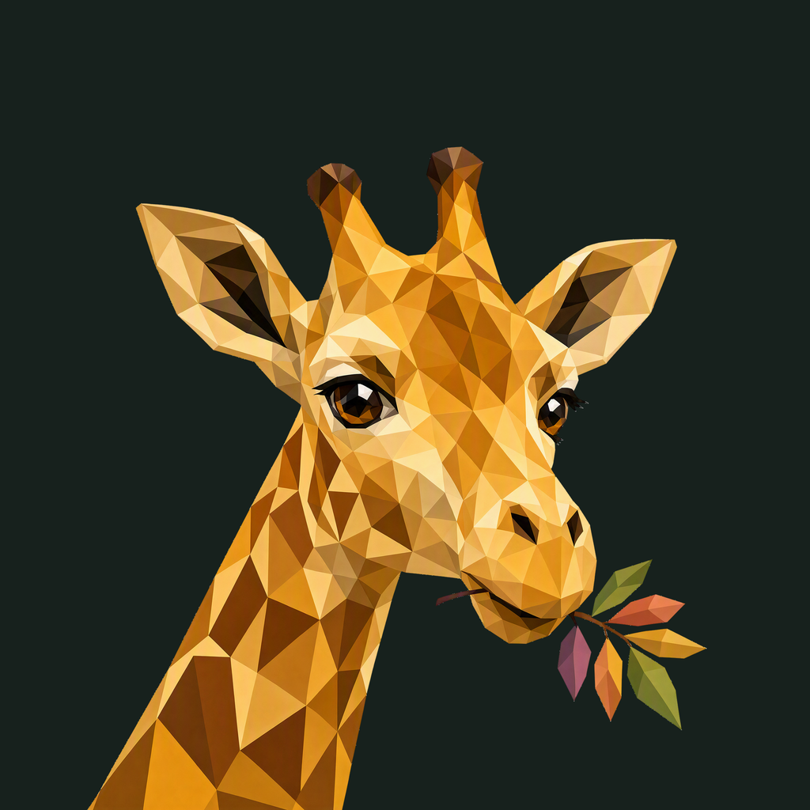

01 / Composition
The last tender leaf
A broad cheek, natural ear spread and a gently diagonal neck form one portrait. The mouth-held acacia sprig stays close; the lower neck continues through the viewfinder.
Animal family · Refined identity
A giraffe turns mid-nibble. Broad honey planes replace the old wreath and scattered color.
Adopted redesign · finishing 02
Native 2048 × 2048

01 / Composition
A broad cheek, natural ear spread and a gently diagonal neck form one portrait. The mouth-held acacia sprig stays close; the lower neck continues through the viewfinder.
02 / Drawing
Ochre planes and broad chestnut patches preserve the giraffe’s species cues. One colored leaf sprig replaces the enclosing wreath and competing decorative fragments.
03 / Presentation
Staggered flat-topped canopies and open branching stems sit in an olive field. Unequal spans add quiet structure around the ears and leaf gesture.
Presentation tiles at 128/64 px; transparent artwork for small app and browser marks.


Ossicones, both ears, face and every leaf keep at least 164.64 px of rounded-edge clearance. A one-pixel placement correction preserves the native extraction and closes the lower neck entry. The historical original is 1408 px; the new artwork is native 2048 px.
A designed background, with colors sampled from the exact native artwork.
Select a swatch to copy its hex value. The Giraffe UI primary (#598128) remains a separate product color.
One transparent foreground, checked on two contrasting backgrounds.


Azure Foundry · gpt-image-2 · one request · native 2048 × 2048
Loading study text…
The previous identity is historical context; the current brief defines the selected animal, gesture and palette. Frogie guides connected flat facets; these owner-provided boards guide the independent background, offset framing, and matte surface.


{kind=link}
{kind=link}
{kind=link}
{kind=link}
{kind=link}